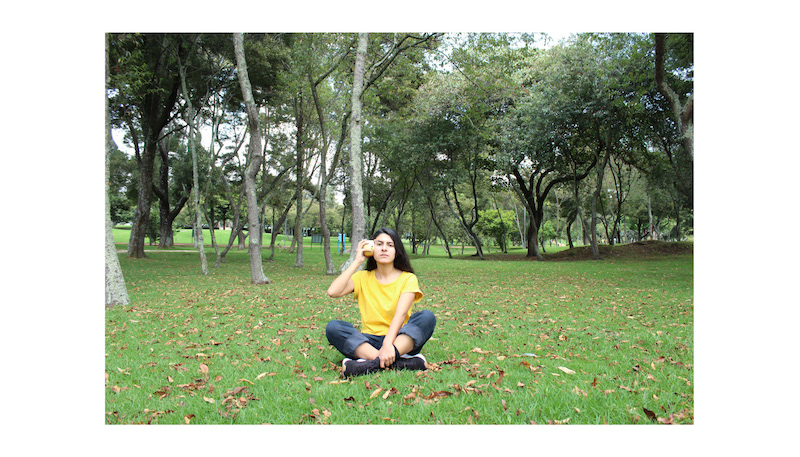
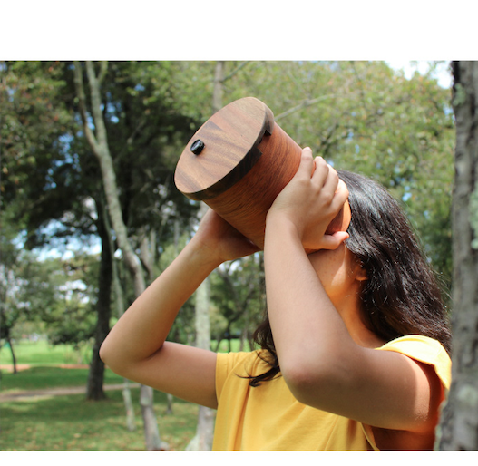
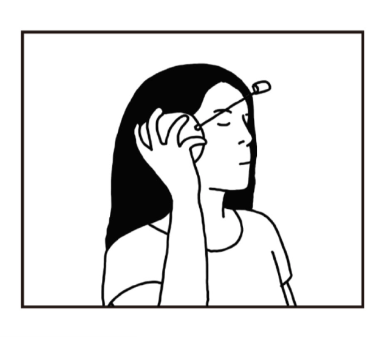
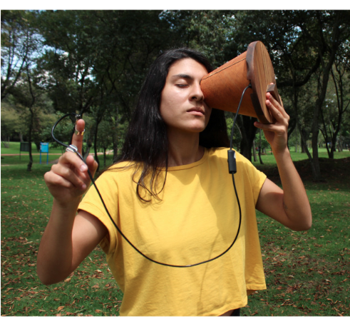
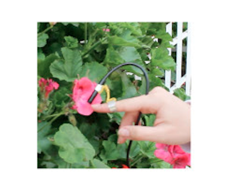

Technology extends our bodies and senses on infinite levels. By modifying how we experience the world, they shape our perception of ourselves.
Technologies for Introspection asks whether it is possible to turn these extensions of the body back towards the self. Can the technologies that push our attention away bring us closer to ourselves?
Three devices defy the sensory experience of everyday life and propose new ways of perceiving the world through a digitally mediated body.




